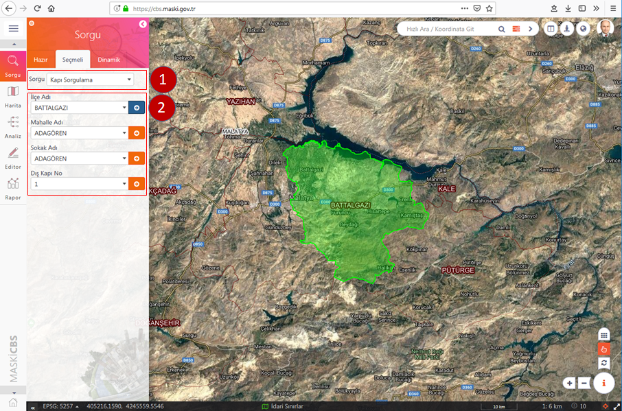
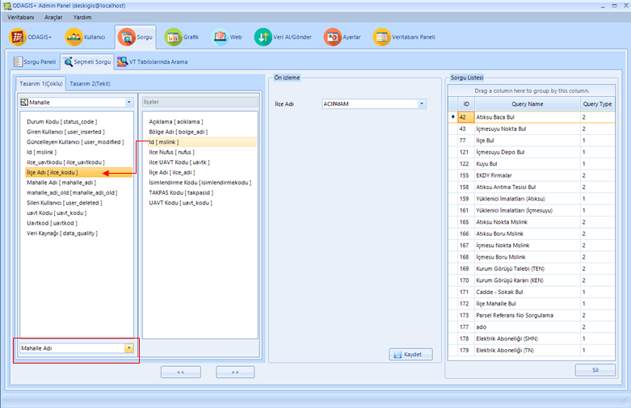
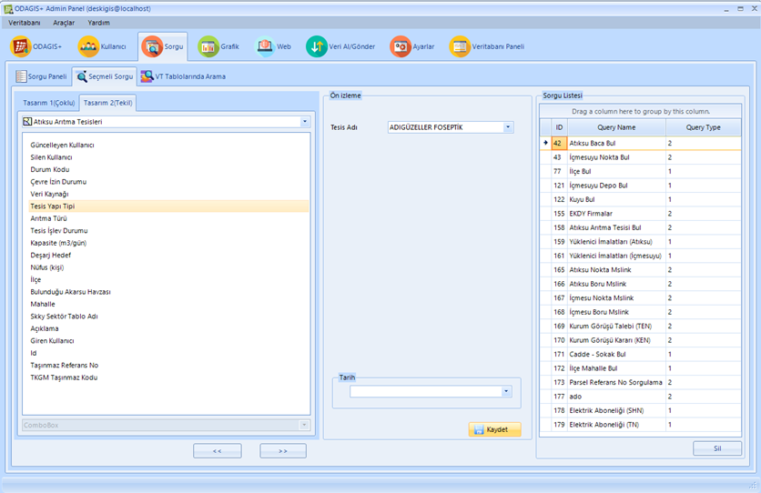

ODAGIS+ Web arayüzünde solda bulunan panelde 2. Sekmede Seçmeli Sorgular yer almaktadır. Seçmeli sorgular Yönetici arayüzünden aşağıda tarif edildiği şekilde kod yazmadan hazırlanıp isim verildikten sonra yetki verilen kullanıcıların istifadesine sunulmaktadır.
 Kullanımı:
Kullanımı:
1- Öncelikle Panelin üst kısımında bulunan seçme kutusundan istenilen sorgu seçilir.
2- Seçilen sorguya göre alt kısımda bir veya daha fazla sayıda birbiri ile bağlantılı seçme kutusu görüntülenir.
3- Herbir seçme kutusunun sağ tarafında beliren ok butonuna basarak ilgili objeler ekranda görüntülenir.

Not : Yönetici Paneli'nden "Seçmeli Sorgu" Oluşturma İşlemi
Yönetici Panelinden Seçmeli Sorgu arayüzü ile ilişkili tablolar için ilişkisel sorgular oluşturulabilmektedir. Bu arayüzde seçmeli sorgu oluşturmak için iki farklı tasarım sihirbazı mevcuttur.
1. Birinci Tasarım(Çoklu Seçmeli Kutu): Birbirleri ile ortak kolonları bulunan tablolar (il, ilçe, mahalle, cadde/sokak gibi) eşleştirilerek sağ kısımdaki önizleme bölümünde görüldüğü gibi birbirleri ile ilişkili seçme kutularından meydana gelen bir sorgu oluşturulmaktadır.

Yönetici Panelinden oluşturulan seçmeli sorgular önizleme yapıldıktan sonra uygun isim verilirek sorgu kaydedilir. Yönetici tarafından ilgili kullanıcılara açılabilir.

2. İkinci Tasarım(Tek Seçmeli Kutu): Tek bir tabaka/tablo üzerinde seçilecek bir sütunun seçmeli kutu veya yazı kutusu şeklinde bir sorgu oluşturulabilmektedir. Bu sorgu benzer şekilde bir isim verilerek kaydedilip ilgili kullanıcılara açılabilir.
